Префектура Киото · Камигамо и Нисигамо · храмы и святилища
Север Киото без толпы: от святилища Камигамо до тихих храмов Нисигамо
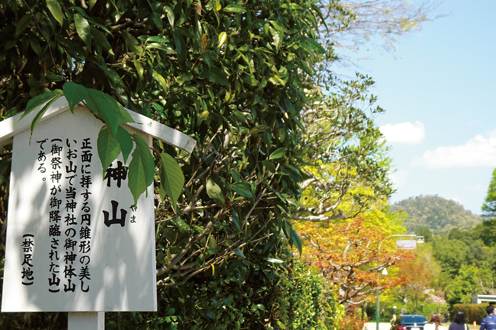
Кто приезжал в Киото не раз, знает, как легко ходить по одному и тому же маршруту. Писатель, коренной киотец, предлагает другой: северную окраину города, о которой почти молчат путеводители. Начинаем от святилища Камигамо и идём сначала на север и запад, а потом зигзагом на юг.
Город
Внутри, снаружи и ещё дальше
Чтобы описать Киото, местные часто говорят о «ракутю» и «ракугай». Ракутю называют сердцевину древней столицы Хэйан-кё, а ракугай всё, что лежит за ней. Границы менялись вместе с эпохами, а иногда и по воле правителей. Чаще всего северным краем ракутю считают улицу Курамагути, южным улицу Кудзё. На востоке город перешагнул реку Камо и дошёл примерно до улицы Ямато-одзи, а на западе граница обычно проходит у улицы Сэмбон.
Знатоки истории тут удивятся. Ведь главный проспект Хэйан-кё, Судзаку-одзи, шёл как раз там, где сегодня улица Сэмбон. Столицу строили по образцу китайской Чанъани: к востоку от проспекта лежала левая половина города, к западу правая. Если западный край ракутю проходит по Сэмбону, куда делась правая половина?
Ответ прост: с первых лет столицы её запад приходил в упадок, а восток рос. Земля на западе была плохой: вода не уходила, для полей она не годилась, случались наводнения, и жить там было неудобно. Город раздался на восток и опустел на западе.
О ракутю и ракугай написано множество книг. А вот то, что лежит ещё дальше, почти не описано. Если не считать известных Кураму, Кибунэ и Сагано, за городом остаются нетронутые уголки. Писатель придумал для них слово «ракуоку», «глубина столицы». Так он называет северный край Ракухоку, северной части города,, а неспешную прогулку по нему «ракуоку сёё».
Святилище
Камигамо: гора вместо храма
Сердцем этих мест служит святилище Камигамо-дзиндзя, объект Всемирного наследия ЮНЕСКО. Оно связано с родом Камо, который хозяйничал в округе ещё до того, как здесь построили Хэйан-кё. Поэтому и сам Камигамо, и Нисигамо за рекой Камо можно считать бывшими владениями святилища.
Сегодня святилищем называют только огороженную территорию, но когда-то границы были размыты, и считалось, что божество охраняет всю округу. Следы этого и видны в здешних местах. Многие паломники идут к святилищу через мост Мисоно-баси, а «мисоно» значит «поле, где растят подношения богам»: люди жили на земле божества, и святилище было её центром.
Об этом говорит и то, что божество Камигамо это гора Кояма, которую видно с моста. Сама гора и есть святилище, а земли у её подножия принадлежали ему.
Отсюда и малые святилища, разбросанные вокруг. Подчинённых святилищ много внутри ограды, но есть они и снаружи. Сразу к востоку от ворот, на холме, стоит Футабахимэ Инари-дзиндзя, ещё восточнее Ота-дзиндзя, и оба относятся к Камигамо. Дальше на восток стоит павильон Окамото Ясураи-до. Это не святилище, но с давних пор его почитают как центр праздника Ясураи, который издавна справляют во всей округе Камо.
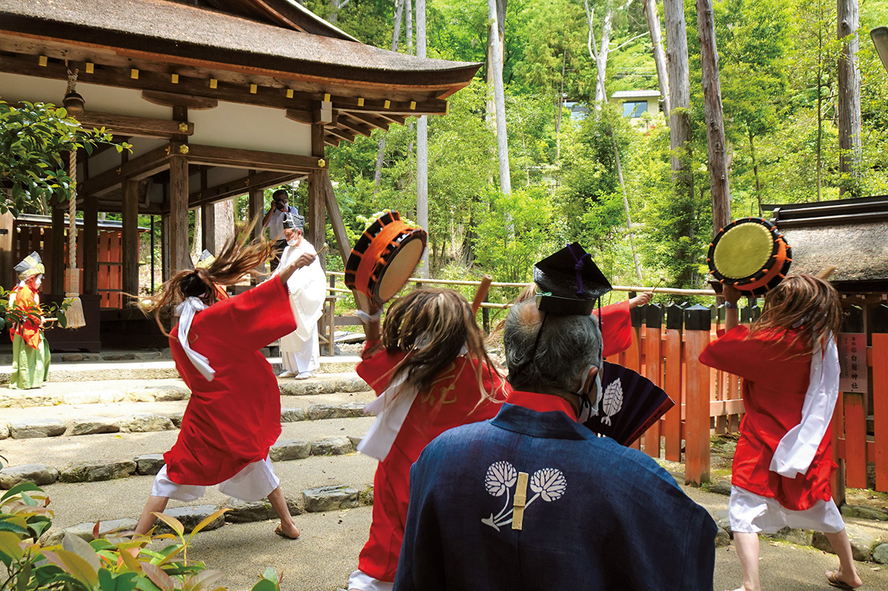
Гора Кояма
- Адрес
- префектура Киото, город Киото, район Кита, Камигамо-Мотояма, 339
Праздник Ясураи в святилище Ота-дзиндзя
- Адрес
- префектура Киото, город Киото, район Кита, Камигамо-Мотояма, 340
Праздник
Ясураи: как прогоняют духов болезни
Ясураи входит в три самых необычных праздника Киото вместе с огненным праздником Курамы и бычьим праздником Удзумасы. Его проводят весной, чтобы успокоить мстительных духов и отогнать болезни.
Особенность Ясураи в том, что его справляют сразу в четырёх местах: в святилищах Имамия-дзиндзя, Гэмбу-дзиндзя, Каваками-дайдзингу и в квартале Окамото в Камигамо. Все четыре лежат на севере города и ещё дальше, в «ракуоку», и считается, что большую роль в празднике играл род Камо.
Смысл праздника в том, чтобы «успокоить цветы». Весной цветочные духи и тепло выманивают демонов болезни. Их усаживают на большой цветочный зонт, относят в святилище и так изгоняют. Если попадёте в Киото в нужное время, обязательно посмотрите: по костюмам и песням сразу понятно, почему праздник считают странным.
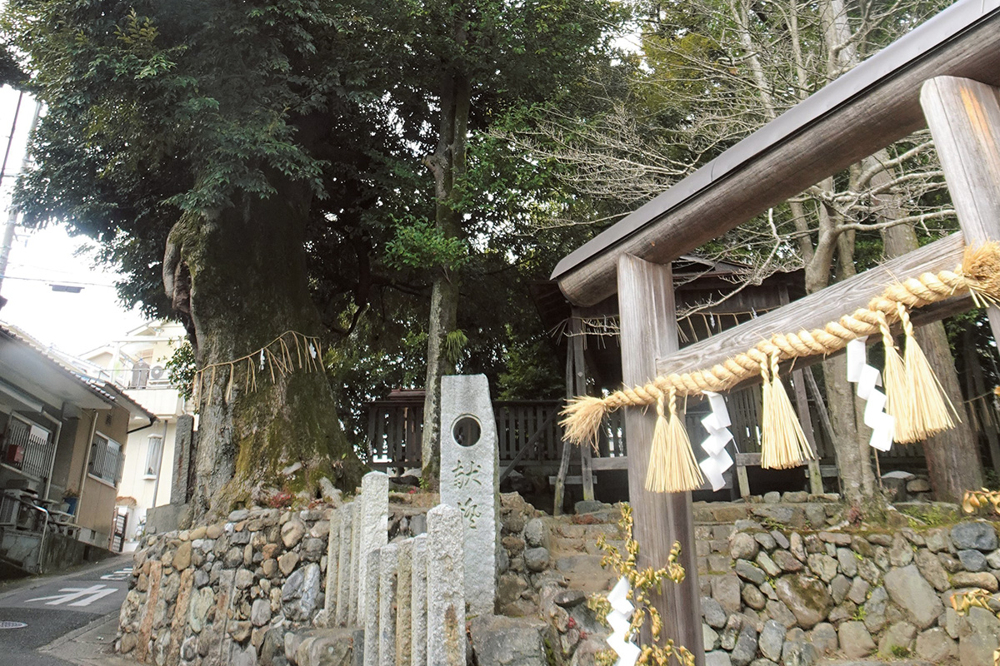
Из четырёх мест одно, Каваками-дайдзингу, знают разве что большие знатоки Киото. Это северная точка нашей прогулки.
Святилище Каваками-дайдзингу
- Адрес
- префектура Киото, город Киото, район Кита, Нисигамо-Минамикаваками-тё, 35
Святилище
Каваками-дайдзингу и лес Дайго
Каваками-дайдзингу это маленькое святилище на склоне примерно в километре по прямой к северо-западу от Камигамо. Ищите священную рощу, которая вдруг возникает среди жилых домов. Чуть севернее стоит лес Дайго-но мори: здесь была загородная усадьба аристократического рода Итидзё, и святилище, как говорят, находилось на её земле.
Усадьба называлась Итидзё Экан сансо и, по рассказам, не уступала размахом императорским виллам Кацура и Сюгакуин. В середине XX века её постройки перевезли в Камакуру, и от неё остался только небольшой лес. Писатель искренне об этом жалеет.
Официально святилище называется Дайдзингу-ся. Его основали в 833 году как святилище-хранитель Камигамо, и история у него почтенная. Здесь торжественно и тихо, а вдали видна гора Хиэй, и ради этого вида сюда стоит дойти.
Если пойти отсюда на запад, у подножия гор найдётся спрятанный храм.
Храм
Сёдэн-дзи: сад, над которым плакал Дэвид Боуи
Из-за удалённости паломников здесь немного, и в храме Сёдэн-дзи почти всегда тихо. Его основали в центре старого города, у перекрёстка Карасума и Имадэгава, а на нынешнее место перенесли в 1282 году.
Потолок над широкой галереей главного зала сделан из досок с кровавыми пятнами, перенесённых из замка Фусими. Это памятник истории, но главное в храме другое: сухой сад камней, в который вписаны вершины горы Хиэй.
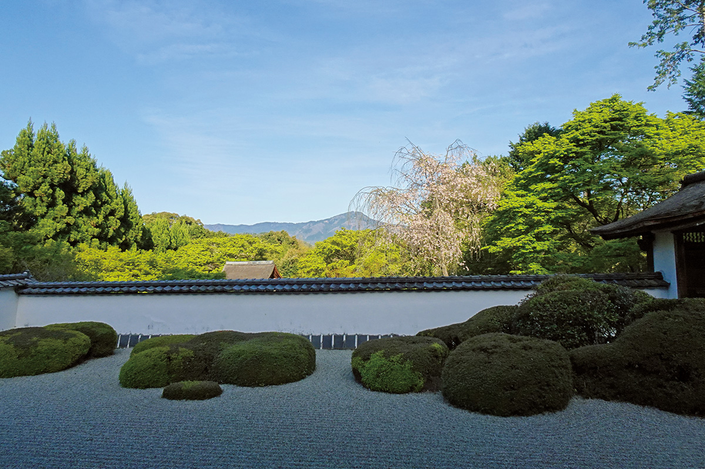
В Киото много садов, где гору Хиэй «берут взаймы» как часть пейзажа, но по красоте этот, по словам писателя, один из двух лучших. Добавьте особую тишину этих мест, и неудивительно, что этот вид, как рассказывают, растрогал Дэвида Боуи до слёз.
Дальше идём на юг, петляя то на восток, то на запад.
Храм Сёдэн-дзи
- Адрес
- префектура Киото, город Киото, район Кита, Нисигамо-Китатиндзюан-тё, 72
Храм
Дзинко-ин и святилище Нисигамо Дайсёгун
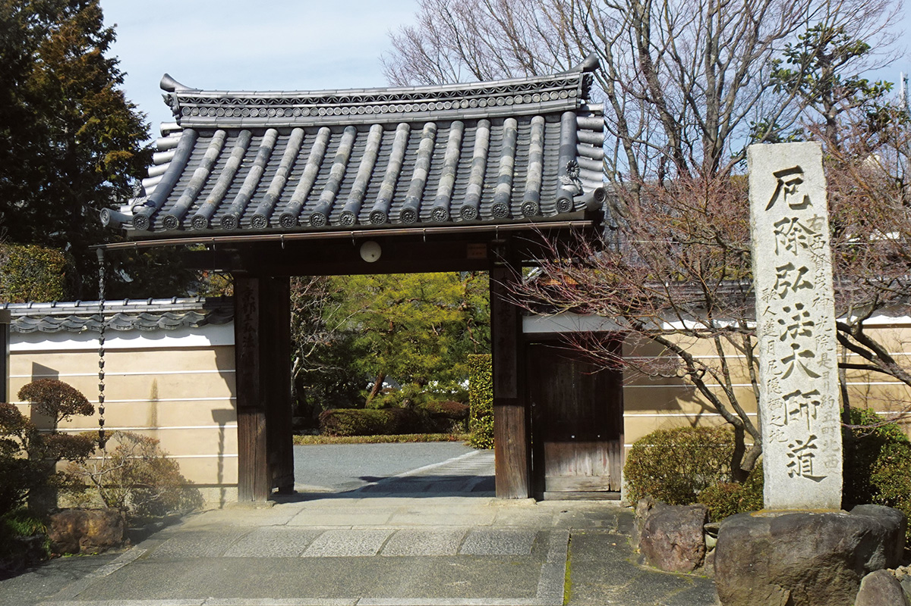
Следующий храм, Дзинко-ин, входит в три храма Кукая (774–835) в Киото и известен летним обрядом «Кюри-кадзи»: молитвой об избавлении от бед с помощью огурца.
Храм основал в 1217 году Ёсихиса Камо, жрец святилища Камигамо. Ему было откровение: построить храм там, где землю осветит чудесный свет. Отсюда и название, «Храм божественного света». Здесь же провела последние годы Рэнгэцу Отагаки (1791–1875), поэтесса и мастер керамики конца эпохи Эдо.
Чуть к юго-западу стоит святилище Нисигамо Дайсёгун-дзиндзя, хранитель северной стороны Киото. В эпоху Эдо святилищ Дайсёгун строили так много, что говорили «одна деревня, одно святилище», и многие до сих пор стоят по всему городу. Их почитают как покровителей своей земли, и местные жители к ним очень привязаны.
Главный зал перенесли сюда из одного из подчинённых святилищ Камигамо, это постройка с почтенной историей. Конусы песка «татэсуна» перед залом такие же, как в самом Камигамо.
Огромные деревья на территории выросли сами из семян, и потому их зовут «деревьями, которые передают жизнь от поколения к поколению». Их почитают даже владельцы старинных киотских лавок. Таких мест три, и каждое обнесено красной оградой. Может быть, поэтому в Киото так много лавок с вековой историей.
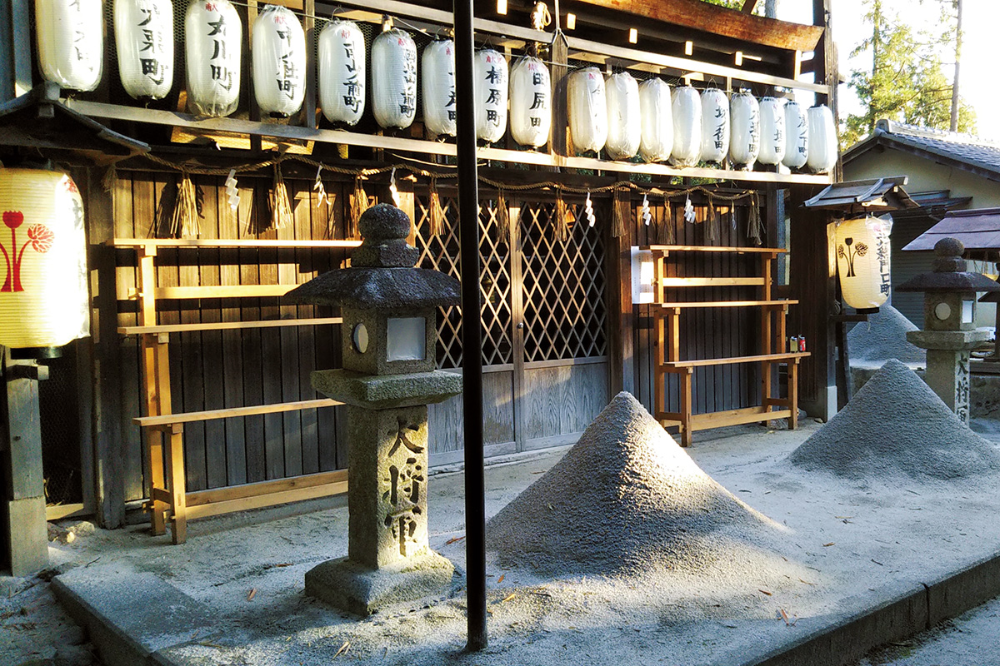
Храм Дзинко-ин
- Адрес
- префектура Киото, город Киото, район Кита, Нисигамо-Дзинкоин-тё, 120
Святилище Нисигамо Дайсёгун-дзиндзя
- Адрес
- префектура Киото, город Киото, район Кита, Нисигамо-Сумиясиро-тё, 129
Мох
Сайхо-дзи, Кога-дзиндзя и Ситику Кибунэ-дзиндзя
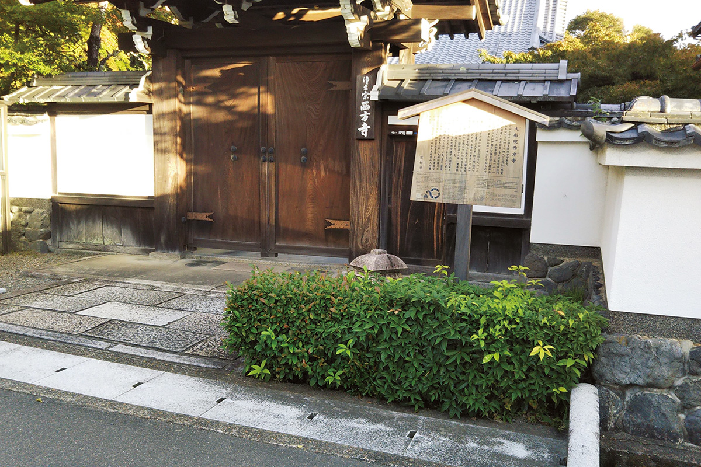
Немного западнее стоит храм Сайхо-дзи, который называют «вторым храмом мхов». Название звучит так же, как у знаменитого Сайхо-дзи, «храма мхов», только пишется другими иероглифами, и мох здесь ничуть не хуже. Основателем храма считают монаха Эннина (794–864).
Храм стоит у подножия горы с «Фунагатой», огромным костром в форме корабля. Это один из пяти костров праздника Годзан-но окуриби, которым в Киото провожают лето. Здесь же похоронены поэтесса Рэнгэцу Отагаки и Росандзин Китаодзи (1883–1959).
Чуть южнее стоит Кога-дзиндзя, одно из святилищ Камигамо за пределами его территории. Его знают как покровителя безопасных полётов. Ещё южнее стоит Ситику Кибунэ-дзиндзя, и у него, как и у Кога-дзиндзя, герб в виде двух листьев штокрозы «футаба-аой».
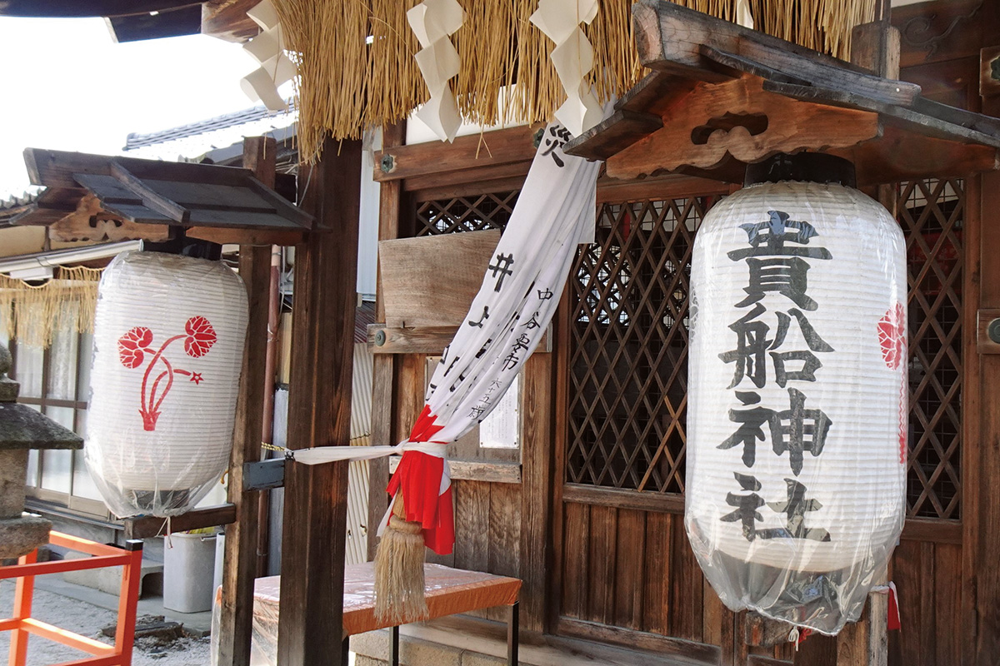
Нисигамо не так велик и почти целиком застроен жилыми домами, так что гулять здесь легко, а старинные храмы попадаются на каждом шагу. А ещё здесь хватает мест, где вкусно кормят.
Храм Сайхо-дзи
- Адрес
- префектура Киото, город Киото, район Кита, Нисигамо-Тиндзюан-тё, 50
Святилище Ситику Кибунэ-дзиндзя
- Адрес
- префектура Киото, город Киото, район Кита, Ситику-Нисикита-мати, 55
Еда
Где поесть по дороге
В Камигамо писатель первым делом советует популярный ресторан «Акияма» и рекомендует заранее заказать там обед. Из сладостей в подарок лучше всего лепёшки «якимоти» из лавки «Дзиммадо», из солений продукция лавки «Нарита».
В Нисигамо рекомендуем кондитерскую «Каран»: здесь любят маленький чизкейк «Сыр из Нисигамо». За японскими сладостями стоит идти в «Симоцуки». Это простая лавка, которую любят местные, но её «кохаку», маленькие сухие сладости, которые меняются по сезонам, милые и изящные, как раз во вкусе мастеров чайной церемонии.
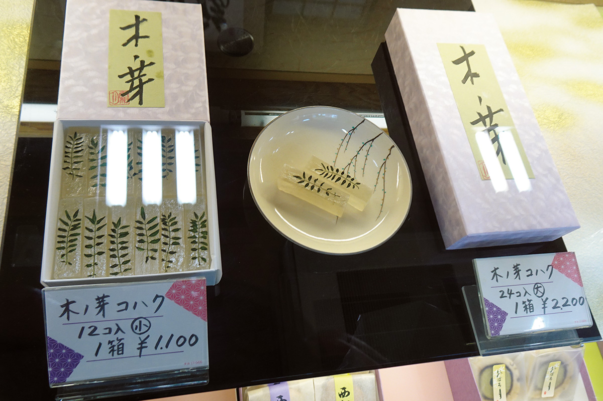
Для простого обеда писатель советует западный «Фунагата» и китайский «Кока». Бронировать не нужно, очередей не бывает, это заведения для своих, но обед вкусный, недорогой и сытный. Загляните туда по дороге на прогулку или обратно, и вы почувствуете, насколько глубок гастрономический Киото.
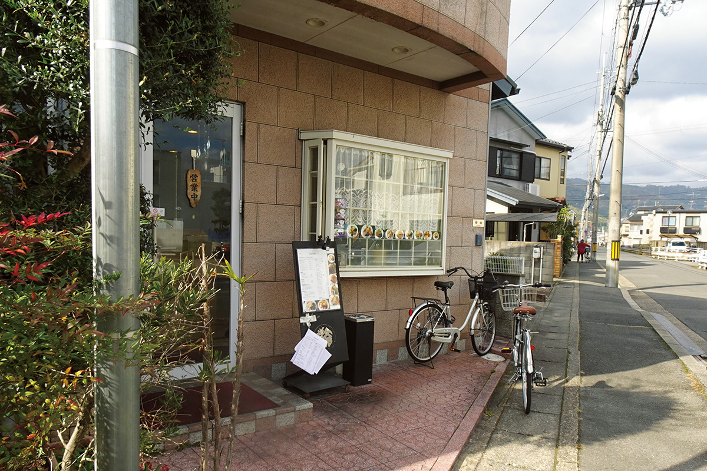
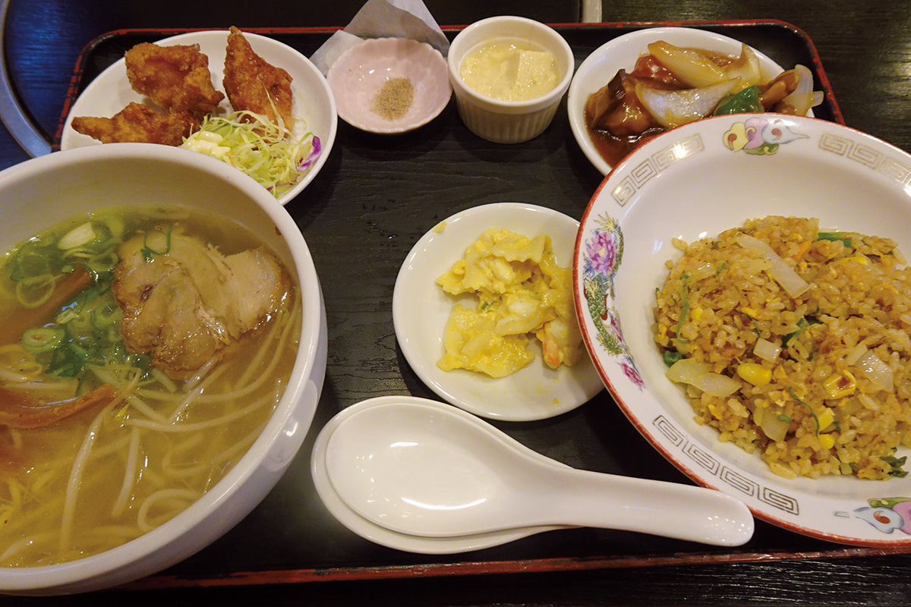
«Симоцуки»
- Адрес
- префектура Киото, город Киото, район Кита, Нисигамо-Хариноки-тё, 5
- Телефон
- +81 75-491-5556
«Фунагата»
- Адрес
- префектура Киото, город Киото, район Кита, Нисигамо-Окури-тё, 71-2
- Телефон
- +81 75-492-9485
«Кока»
- Адрес
- префектура Киото, город Киото, район Кита, Омия-Минамицубакихара-тё, 21-3
- Телефон
- +81 75-493-5046
Фото: Хисаси Касиваи.